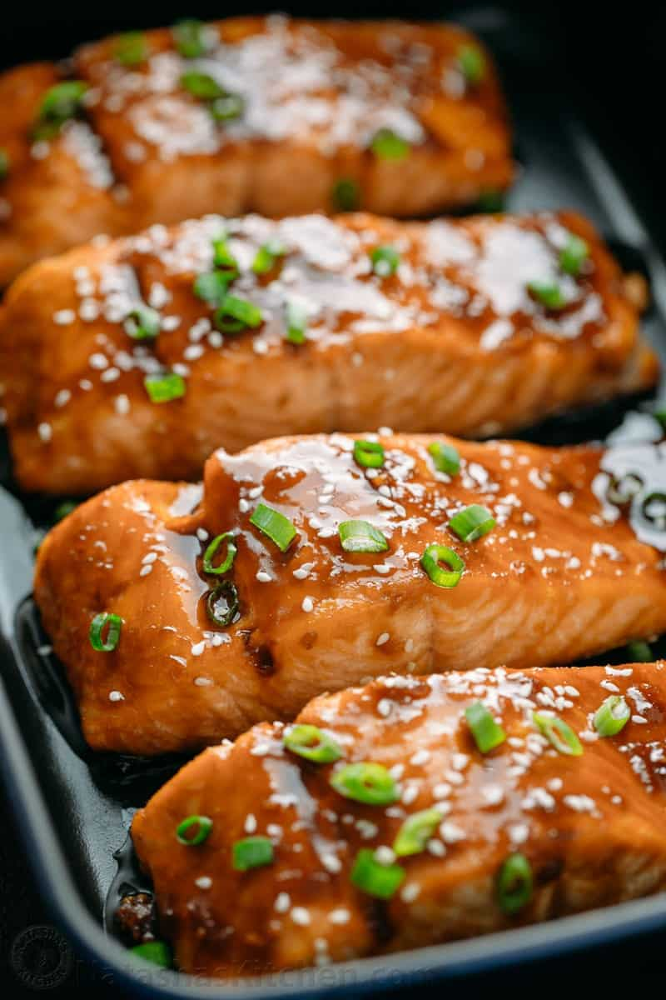

Return
Salmon Teriyaki

Teriyaki salmon is a dish made by marinating salmon fillets in a sweet and savory mixture of soy sauce, mirin, sake, and sugar, and then grilling, broiling, or baking until cooked through. The marinade creates a delicious glaze that caramelizes on the surface of the salmon, giving it a sweet and slightly charred flavor. Teriyaki salmon is a popular Japanese-inspired dish that is often served with rice and vegetables, and can be enjoyed as a healthy and flavorful meal.
Ingredients
- 2 skinless salmon fillets
- 1 tbsp sweet chilli sauce
- 1 tbsp honey
- 1 tsp sesame oil
1 tbsp mirin or dry sherry
- 2 tbsp soy sauce
- 2 tsp finely grated ginger
Method
- Heat oven to 200C/180C fan/gas 6 and put the skinless salmon fillets in a shallow baking dish.
- Mix the sweet chilli sauce, honey, sesame oil, mirin or dry sherry, soy sauce and finely grated ginger in a small bowl and pour over the salmon so the fillets are completely covered. Bake for 10 mins.
- Serve the Teriyaki Salmon with appropriate side dishes, such as asparagus and mash.